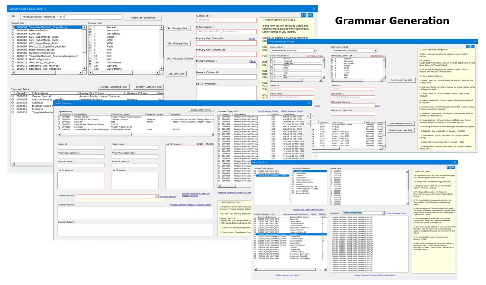
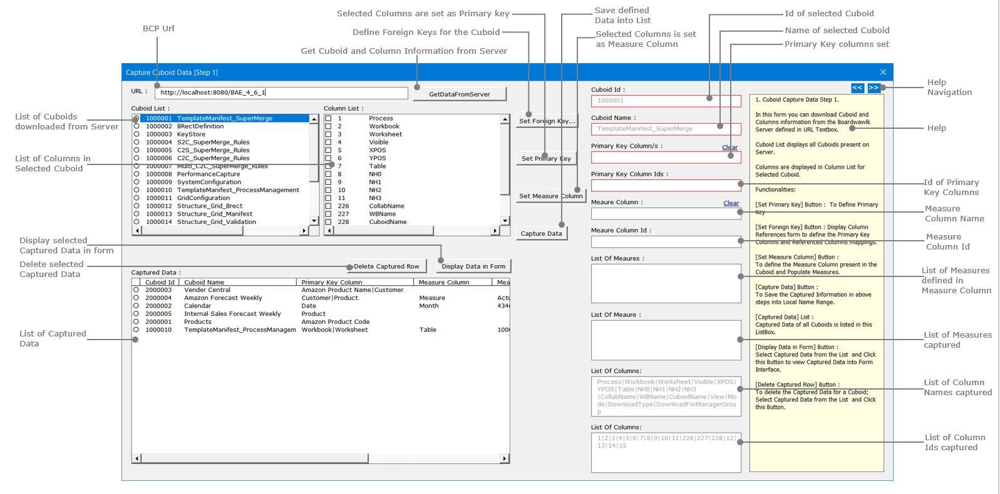
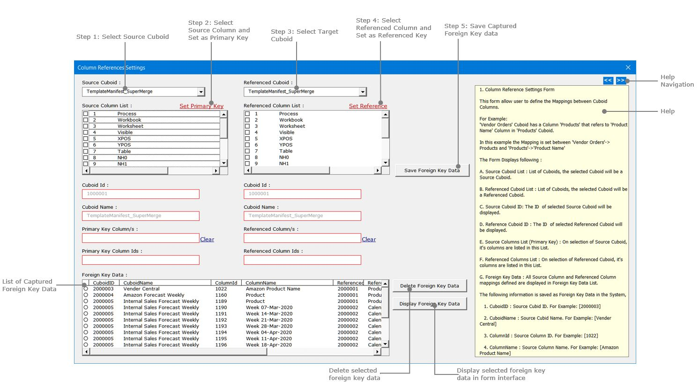
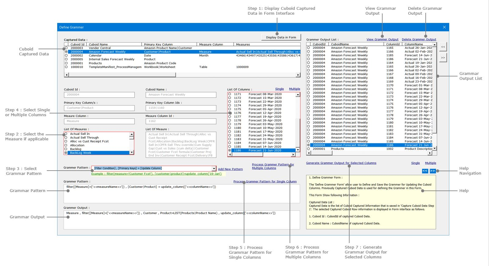

12. Grammer Generation
-
-
Cover Page
Grammar Generation

-
1. Introduction
To read unstructured data from different sources and package it into Structured format we need a Grammer for every entity in data.
Generate the Grammer is multi-step process that needs following information to be stored :
Step 1: Need to define the Source of the entity.
Step 2: Need to define the relationship of entity with another entity.
Step 3: Need to define the Grammar Rule to generate the Grammar.
Step 4: Extract the Grammer based on above information stored.
Pre-Requisite
We have the Target Data Structure available and for each column in the Target Data Structure we need to define the Grammer.
The Target Data Structure is available as Tables in Excel Worksheet in structured format.
The Target Data Structure is stored as Cuboid in Boardwalk Collaboration Platform it's structure is available through HTTP Request.
-
2. Define the Source of Entity.
Following queries are answered in this Step :
1. What is the Source?
2. What are the columns in the Source?
3. Is there any Measure Column in the Source? If Yes what is the Measure Column Name?
4. What are the Measures defined in the Source?
5. What are the Ids of entities defined in the Source?
In this step open Capture Cuboid Data Form by clicking Ribbon Button in Excel.
Enter the URL that points to Boardwalk Collaboration Platform Server.
Click GetDataFromServer button to download the list of Cuboid and it's Columns into the Form.
The Cuboid List displays the list of Cuboid Id and Cuboid Names present on BCP Server.
When Cuboid is selected from the Cuboid List, the corresponding Cuboid Columns are displayed in Columns List.
Setting Primary Key:
Select One or More Columns from the Column List and click Set Primary Key button to set the Primary Key Columns Textbox in the form.
The corresponding Primary Key Column Ids are populated in the Primary Key Column Ids Textbox in the form.
Setting Measure Column:
Select a Columns from the Column List and click Set Measure Column button to set the Measure Columns Textbox in the form.
The corresponding Measure Column Id is populated in the Measure Column Id Textbox in the form.
The form also displays the List of Measures in the list box.
Setting Foreign Key:
Click Set Foreign Key... button that opens Column References Settings form to set the Primary Key References in the Cuboid. More details about this form is given in next topic.
All above information captured must be saved by clicking Capture Data button in the form.The form also saves list of Column Names, Column Ids, List of Measures in Captured Data. All saved captured data are listed in Captured Data list in the form.
User can select a Captured Data from the list and display the details in Form Interface by clicking Display Data In Form button.
To delete the captured data from the list, user need to select a Captured Data and click Delete Captured Row button.
Following image shows the Cuboid Captured Data [Step 1] form.

-
3. Define the relationship of entity with another entity.
Following queries are answered in this Step :
1. Is there any Source Entity referenced to another Source Entity?
2. What is the Source Entity?
3. What is the Referenced Entity?
4. What are the Ids of Source and Referenced entities?
User captures this information in "Cuboid References Setting" form. This form is opened by clicking Set Foreign Key... button in Cuboid Capture Data Step[1] form.
Cuboid References Settings displays following information:
Source Cuboid: The list of cuboids on BCP Server.
Source Column List: The list of Columns in selected Source Cuboid.
Referenced Cuboid: The list of cuboids on BCP Server.
Referenced Column List: The list of Columns in selected Referenced Cuboid.
When Source Cuboid is selected the Cuboid Id and Cuboid Name and list of Source Column List is populated.
When Referenced Cuboid is selected the Referenced Cuboid Id and Cuboid Name and list of Referenced Column List is populated.
When user set one or more Primary Key Columns from Source Column List; the corresponding Primary Key Ids are populated in Primary Key Column Ids.
When user set one or more Referenced Columns from Referenced Column List; the corresponding Referenced Column Key Ids are populated in Referenced Column Ids.
User need to click Save Foreign Key Data to save this captured information into Foreign Key Data list.
To display foreign key data in form interface, user selects the Foreign Key Data from the list and clicks Display Foreign Key Data button.
To delete foreign key data from the list, user selects the Foreign Key Data from the list and clicks Delete Foreign Key Data button. The foreign key data is removed from the list after confirmation from user.
Following image shows Column References Setting Form.

-
4. Define Grammar Rule to generate the Grammar.
Following queries are answered in this Step :
1. What entities in Table are updated?
2. What are the key columns?
3. What are the updated columns?
4. Is there any Measure applied to update the entity?
5. What are the Measure filters applied to update the entity?
6. What is the Grammar Pattern to Generate the Grammer Output?
Most of the above queries are answered in previous steps and stored in Captured Data.
The Grammar Output Generation is done in Define Grammar Form. This form displays following information:
Captured Data List
This list shows the information caputured in Capture Cuboid Data [Step 1] Form for every cuboid. This information includes following:
CuboidId,
CuboidName,
Primary Key Columns,
Primary Key ColumnIds,
List of ColumnsNames and ColumnIds,
Measure Column and Measure ColumnId,
List of Measures
Grammar Pattern
Grammar Pattern is the pattern of Strings to use for generating the Grammer output. The examples of Grammar Patterns are as follows:
[Primary Keys] , [Filter Condition] = [Update Column]
[Primary Keys] = [Update Column]
[Filter Condition] , [Primary Keys] = [Update Column]
User selects the Grammar Pattern to generate Grammar Output.
Grammar Output
Grammar Output is generated using Grammar Pattern by replacing String Patterns by actual Filters and Column Names and Column References of Selected Columns.
First, User can select Grammar Pattern and generate Grammar Output for a Single column. User can confirm the generated Grammar Output and further can generate Grammar Output for Multiple columns.
Following are the examples of Grammar Pattern and corresponding Grammar Output generated:
Grammar Pattern: [Primary Keys] , [Filter Condition] = [Update Column]
Grammar Output: [customer|product],filter(measure='Customer Fcst')=update_column('19-Jan')
Grammar Pattern: [Primary Keys] = [Update Column]
Grammar Output: [customer|product]=update_column('19-Jan')
Grammar Pattern: [Filter Condition] , [Primary Keys] = [Update Column]
Grammar Output: filter(measure='Customer Fcst'), [customer|product]=update_column('19-Jan')
Grammar Output List
The Grammar Output generated is stored in Grammar Outpupt List.
User can view Grammar Output by selecting it from the list and clicking View Grammar Output in form interface.
User can delete Grammar Output by selecting it from the list and clicking Delete Grammar Output.
Following image shows Define Grammar Form.

-
5. Extract the Grammar based on information captured.
Cuboid Information Captured while defining the Cuboid Keys and Cuboid Grammar are saved in different NameRanges in Excel.
Extract Data Form is developed to get this captured information as Name=Value pair list for further processing.
Extract Data Form displays following :
Captured Data Ranges
It is the list of NameRanges used to store the Captured Data in Excel.
Captured Information
It is the list of Columns present in Captured Data Range.
Sample Data
It displays the Sample List of data present in Selected Captured Information of Selected Captured Data Range.
Extract Information List
It is the list of the combination of Captured Data Range and Captured Data Column in order to generate Name:Value pair of Extracted information for selected Cuboid.
User can maintain this list of Extract Information by selecting Captured Information of Captured Data Range and clicking Extract This Captured Information.
User can delete Extract Information by clicking Delete Extract Info Data.
Extract Captured Data
User can select Extract Information from the List and Choose the Cuboid from Cuboid List, to generate Name:Value pair of that information for that Cuboid.
For Example,
To get Grammar Output defined on Cuboid Internal Sales Forecast Weekly user makes following selection and click Extract Captured Data:
Captured Data Range : CUBOID_WISE_GRAMMAR_OUTPUT
Captured Data Column: GrammarOuput
Cuboid : Amazon Forecast Weekly
Following is the Extracted Information returned by above query:
GrammerOutput~Customer , Product=LIST(Products|Product Name) , update_column(['Actual 26-Jan-2020'])~CUBOID_WISE_GRAMMER_OUTPUT
GrammerOutput~Customer , Product=LIST(Products|Product Name) , update_column(['Actual 02-Feb-2020'])~CUBOID_WISE_GRAMMER_OUTPUT
GrammerOutput~Customer , Product=LIST(Products|Product Name) , update_column(['Forecast 14-Jun-2020'])~CUBOID_WISE_GRAMMER_OUTPUT
GrammerOutput~Customer , Product=LIST(Products|Product Name) , update_column(['Forecast 21-Jun-2020'])~CUBOID_WISE_GRAMMER_OUTPUT
GrammerOutput~Customer , Product=LIST(Products|Product Name) , Measure , filter([Measure]=['Backlog']) , update_column(['Actual 19-Jan-2020'])~CUBOID_WISE_GRAMMER_OUTPUT
GrammerOutput~Customer , Product=LIST(Products|Product Name) , Measure , filter([Measure]=['Backlog']) , update_column(['Actual 26-Jan-2020'])~CUBOID_WISE_GRAMMER_OUTPUT
Save Extracted Captured Data To Worksheet
'Save Extracted Captured Data To Worksheet' allows user to save the Extracted Information into a Worksheet.
Following image shows Extract Data Form.

-
6. Downloads and Links and Sources
1. Grammar Generation.7z : Zip file containing following files,
Grammar Generation.xlsb,
GRAMMER_STORED_PROCEDURES.sql,
web.xml,
xlGrammerService.java,
xlGrammerServiceLogic.java.